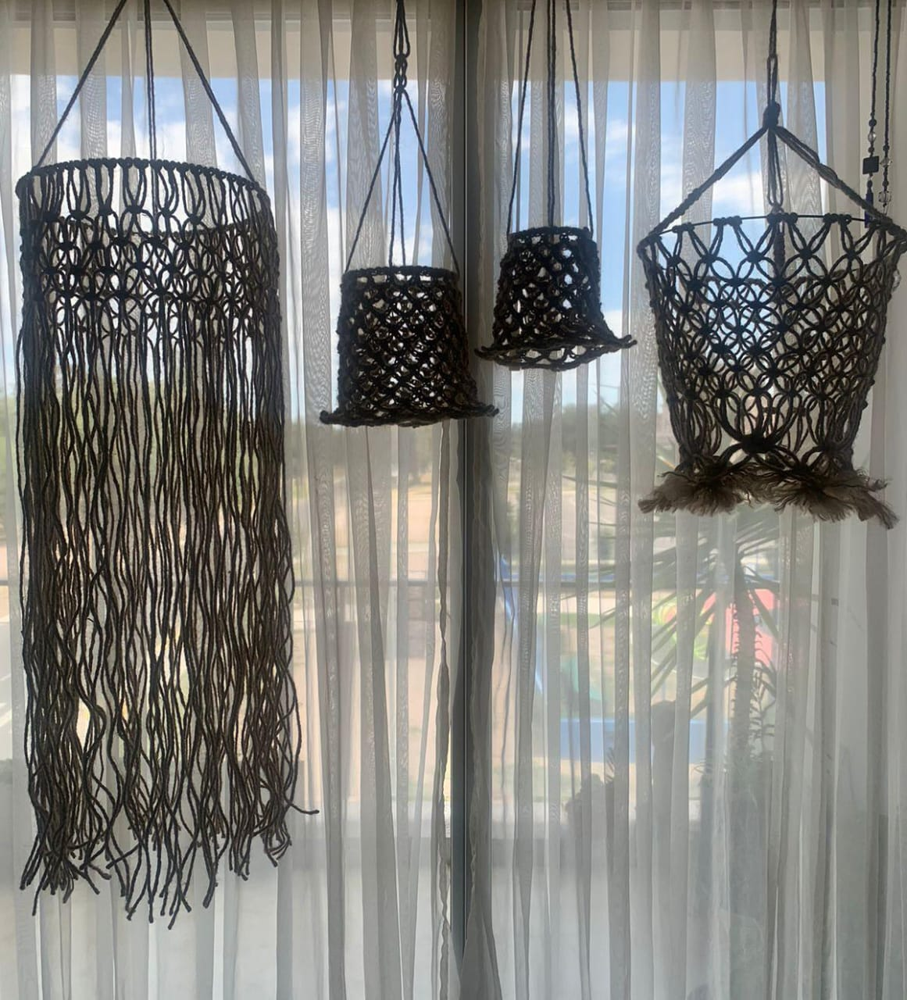

Loreto Lob
Diseñadora Textil
Especializada en prendas tejidas con fibras naturales
Sobre mí
Diseñadora textil con un enfoque en la sostenibilidad y la creatividad.
Mis diseños buscan resaltar la belleza de las fibras naturales y la calidez de los colores.
Comodidad
Las fibras naturales permiten que tu piel respire, manteniéndote fresco en verano y cálido en invierno.
Durabilidad
Nuestras prendas están diseñadas para durar, resistiendo el paso del tiempo sin perder su belleza.
Estilo único
Cada tejido tiene una textura y un acabado único, aportando un toque especial en tu estilo.
Variedad de Productos
- Prendas de vestir
- Textiles para el hogar
- Accesorios de moda
- Artículos personalizados
Mis Diseños
Tote bag
Tote Bag Vision
Bag Cardo
Bolso tejido en yute
Remera Natural
Remera Tierra
Lámpara Panal
Lámparas Bells

Porta Lámparas Tejidas con Fibras Naturales
Lámpara Medusa

Deco en Fibras Naturales
Cestas Tejidas en Algodón Orgánico
Nuestro compromiso con la naturaleza se refleja en cada uno de nuestros diseños textiles, donde priorizamos la calidad y la responsabilidad ambiental.
Descubre cómo la naturaleza puede transformar tu vida.
Contacto
Puedes contactarme a través de mis redes sociales
Whatsapp: +54 2664927740